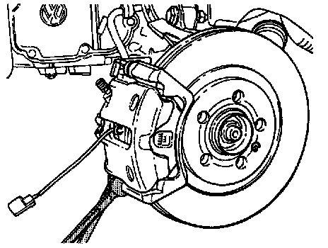
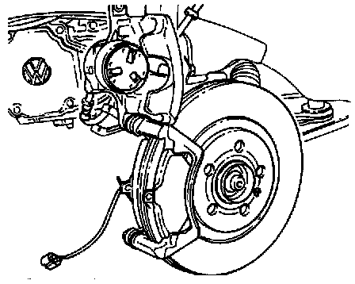
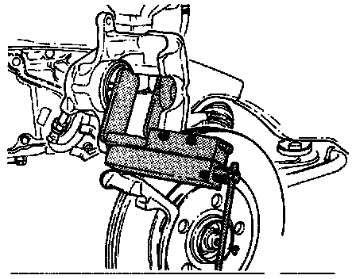

Lucas/Girling Caliper
Lucas/Girling Front Caliper:

Component Notes And Information
NOTE:
^ During removal and installation procedures, refer to the component location illustration above and component notes below.
^ Separate connector for brake pad wear indicator.
^ When removing self locking bolts (14), counter hold guide bolts (17) using a suitable wrench
^ To prevent brake fluid spillage draw the brake fluid from the reservoir using a bleeder bottle that is used ONLY for brake fluid.
WARNING:
^ Brake fluid is poisonous and must NEVER be removed by siphoning with your mouth.
CAUTION:
^ After servicing caliper, depress brake pedal firmly several times to seat the pads in their normal operating position.
1 Screw
2 Brake pads
- With pad wear indicator
- Always replace both sides
- Thickness: 14 mm (0.551 inch)
- Wear limit: 7 mm (0.276 inch) including backing plate
3 Brake disc
- Always replace all pads on one axle at the same time
- Remove brake caliper before removing
- Disc For Models With 4 Cylinder Engine:
Diameter: 256 mm (10.08 inch)
Thickness: 20 mm (0.787 inch)
Wear limit: 18 mm (0.709 inch)
- Disc For Models With V6 Cylinder Engine:
Diameter: 280 mm (11.02 inch)
Thickness: 22 mm (0.866 inch)
Wear limit: 20 mm (0.787 inch)
4 Screw
5 Wheel hub
- Replacement, refer to Steering and Suspension
6 ABS Wheel Speed Sensor Rotor
- For models with ABS
7 Bolt
- Tighten to: 10 Nm (7 ft lb)
8 Splash shield
9 Wheel bearing housing
10 Brake carrier
- Replacement part comes assembled with grease
- Use repair kit if protective caps are damaged
- Lubricate guide bolts with grease supplied in repair kit
11 Heat deflector
- Insert in piston
12 Brake caliper
13 Bracket
14 Self-locking bolt
- Tighten to: 35 Nm (26 ft lb)
- Always replace
15 Bolt
- Tighten to: 125 Nm (92 ft lb)
16 Protective cap
17 Guide pin
18 Connector
- For brake pad wear indicator
19 Bracket
20 Bracket
21 Connector
- For ABS Wheel Speed Sensor
22 Bolt
- Tighten to: 10 Nm (7 ft lb)
23 ABS Wheel Speed Sensor
- Install with lubricating paste, Part No. G 000 650 or equivalent
Removal
- Separate connector for brake pad wear indicator.

- Remove lower caliper to guide pin mounting bolt (hold guide pin while loosening).

- Swing brake caliper upward.
- Remove brake pads.
CAUTION:
^ Do not allow the caliper to hang by the brake hose. The unsupported weight can stretch and damage the hose.
^ Do not disconnect the brake hose from the caliper when removing brake pads.
Installation
WARNING: Brake fluid is poisonous and must never be extracted by mouth through a hose.
CAUTION:
^ Extract part of the brake fluid from the brake fluid reservoir before pushing back the pistons.
^ Use the bleeder battle or a plastic bottle, which is used only for brake fluid, for extracting the fluid.
^ If this is not done, particularly if the brake fluid has been topped up in the meantime, brake fluid may flow out and cause damage.

- Press piston into caliper.
- Install brake pads and heat shield.
- Swing brake caliper down and install new lower bolt (supplied in repair kit).
- Tighten caliper to guide pin mounting bolts.
Tighten to: 35 Nm (26 ft lb)
- Depress brake pedal firmly several times to seat brake pads in normal operating position.